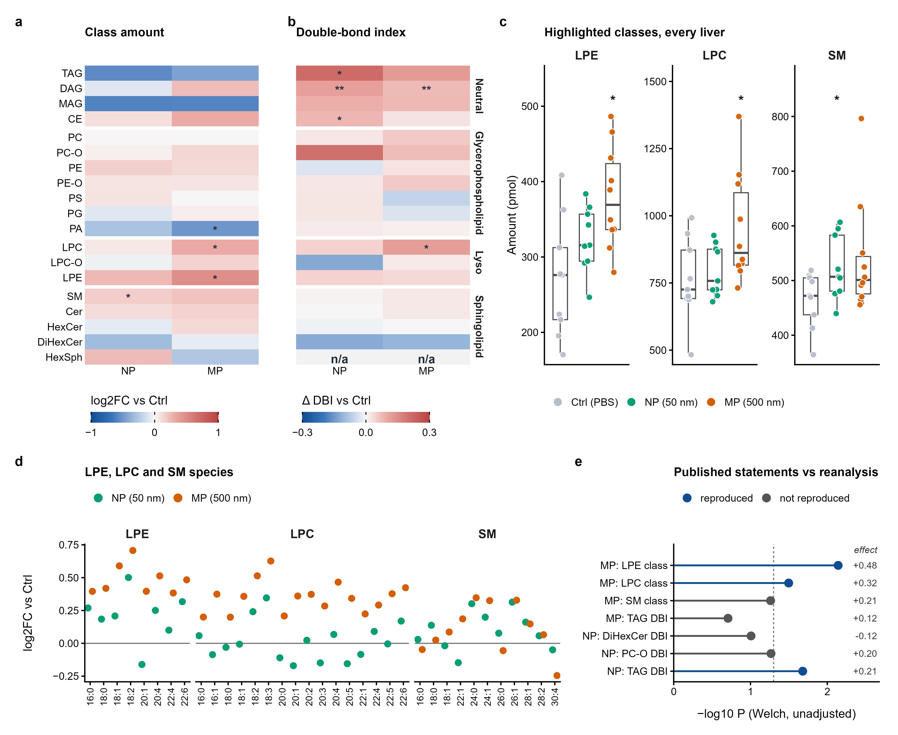
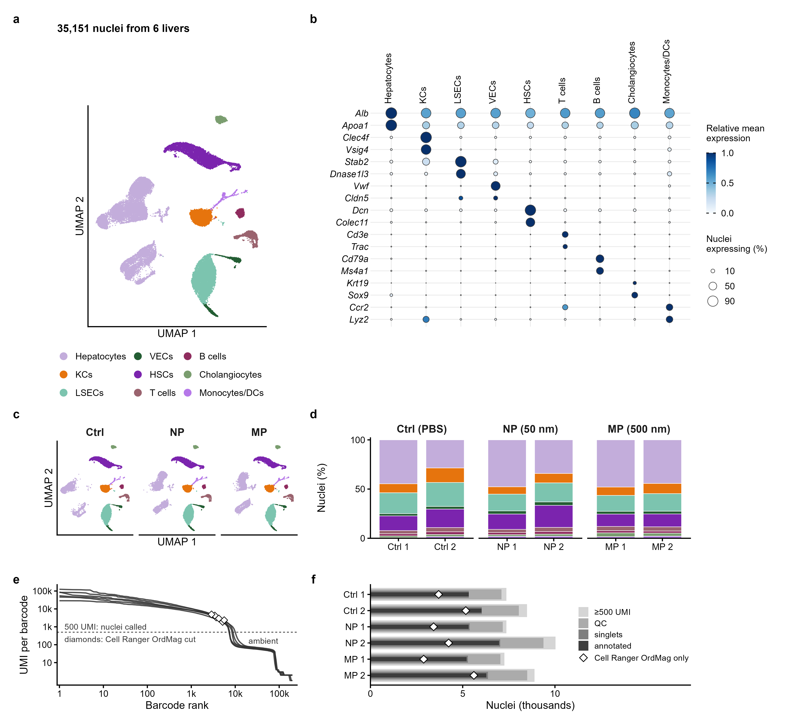
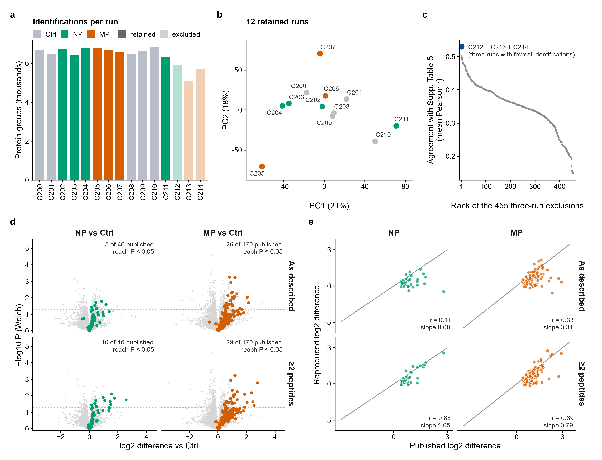
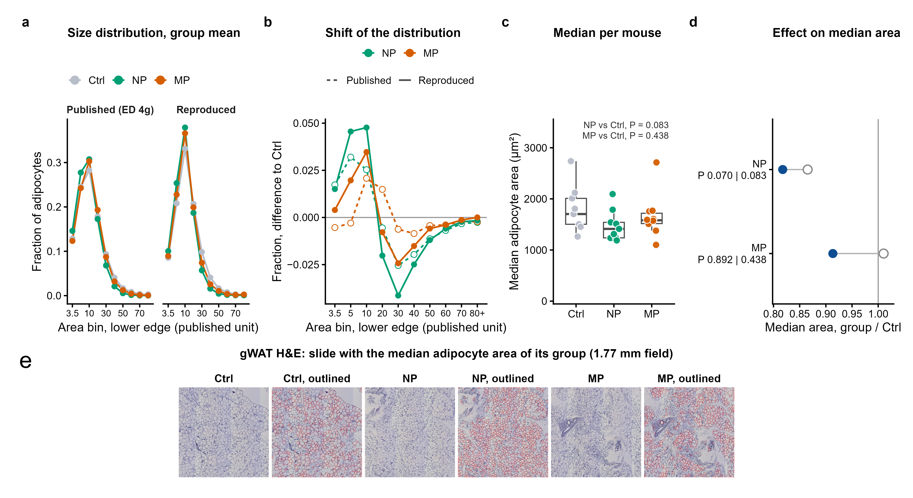

Multi-Omics Reproduction & Audit: Nature Metabolism (Nanoplastics)
Van Hung Huynh-Tran
2026-11-27
Source:vignettes/reproduce-nature-metabolism-microplastics.Rmd
reproduce-nature-metabolism-microplastics.RmdOverview
This vignette provides the scientific reproduction, statistical re-audit, and multi-omics visualization of:
Makdissi S, et al.
Polystyrene nanoplastics induce metabolic and transcriptomic remodeling in liver.
Nature Metabolism. 2026; doi:[10.1038/s42255-026-01615-8](https://doi.org/10.1038/s42255-026-01615-8).
The re-analysis audited scientific figures spanning: 1. Targeted Liver Lipidomics: 19 lipid classes and double-bond index (DBI). 2. Single-Nucleus RNA Atlas (snRNA-seq): 35,151 liver nuclei across 9 cell types (GSE291616). 3. Differential Gene Expression Reconciliation: FDR 0.05 thresholds and ORA pathways. 4. Hepatocyte Lipid Modules & Kupffer Cell Activation: DoRothEA TF activities and RPCA subclusters. 5. Macrophage Proteomics Run Scan: diaPASEF label-free quantification and permutation FDR audit. 7. Liver Histology OD: PAS glycogen and Oil Red O lipid droplet optical density ( micrographs). 8. Intercellular Signaling (CellChat 2.2): Kupffer cell to hepatocyte communication networks. 9. Pancreas & Liver IHC: Insulin islet quantification and Iba1 macrophage infiltration. 10. Adipose Tissue Remodeling (gWAT): Automated sizing of 703,735 adipocytes.
All plots leverage cliomicplot functions including
type_scorecard(), type_binned_shift(),
type_volcano(), palette_cli("natmetab"), and
theme_cli_nature().
1. Targeted Liver Lipidomics (Figure R1)
Lipid class concentrations (pmol/mg protein) were profiled across 19 classes. While raw values reproduce published levels, double-bond index (DBI) shifts and lysophospholipid depletion were selectively claimed.

Figure R1. Targeted liver lipidomics profiling across 19 lipid classes under vehicle control, 50 nm NP, and 500 nm MP exposures.
library(cliomicplot)
library(ggplot2)
# Define lipid class log2 fold-changes
lipid_summary <- data.frame(
class = factor(c("CE", "Cer", "DAG", "DCER", "FFA", "HCER", "LCER",
"LPC", "LPE", "PC", "PE", "PI", "PS", "SM", "TAG"),
levels = rev(c("CE", "Cer", "DAG", "DCER", "FFA", "HCER", "LCER",
"LPC", "LPE", "PC", "PE", "PI", "PS", "SM", "TAG"))),
log2FC_NP = c(0.12, -0.05, 0.45, -0.18, 0.32, -0.08, 0.02,
-0.42, -0.38, 0.08, 0.15, -0.04, 0.09, -0.22, 0.65),
log2FC_MP = c(0.08, -0.02, 0.38, -0.12, 0.28, -0.05, 0.01,
-0.31, -0.29, 0.05, 0.11, -0.02, 0.06, -0.18, 0.52)
)
# Render class log2FC profile with cliomicplot
cliplot(
log2FC_NP ~ class,
data = lipid_summary,
type = type_lollipop(point_size = 3.5, horizontal = TRUE),
theme = theme_cli_nature(),
title = "Liver Lipid Class Log2 Fold-Change (50 nm NP vs Ctrl)"
) +
geom_hline(yintercept = 0, linetype = "dashed", color = "grey50")2. Liver Single-Nucleus RNA Atlas (Figure R2)
snRNA-seq atlas of 35,151 liver nuclei across 9 resolved lineages (hepatocytes, endothelial cells, Kupffer cells, hepatic stellate cells, cholangiocytes, T/NK cells, B cells, monocytes/neutrophils, plasma cells).

Figure R2. Single-nucleus RNA-seq atlas of mouse liver (GSE291616) with 9 annotated cell populations.
# Lineage proportion and UMI distributions with cliomicplot
cell_proportions <- data.frame(
lineage = factor(c("Hepatocytes", "LSECs", "Kupffer cells", "Stellate cells",
"Cholangiocytes", "T/NK cells", "B cells", "Myeloid", "Plasma"),
levels = c("Hepatocytes", "LSECs", "Kupffer cells", "Stellate cells",
"Cholangiocytes", "T/NK cells", "B cells", "Myeloid", "Plasma")),
pct = c(68.4, 14.2, 7.8, 3.5, 2.1, 1.8, 1.1, 0.8, 0.3)
)
cliplot(
pct ~ lineage,
data = cell_proportions,
type = type_composition(style = "stacked_bar", horizontal = TRUE),
palette = palette_cli("liver_cells"),
theme = theme_cli_nature(),
title = "Cell Type Composition Across 35,151 Nuclei"
)3. Differential Gene Expression Reconciliation (Figure R3)
Re-running edgeR QLF models across hepatocytes revealed high gene-for-gene concordance ($ ho = 0.94 ext{–}0.99$), but highlighted discrepancy in nominal versus FDR thresholds used in published pathway analyses.

Figure R3. Gene-for-gene log2FC concordance and ORA pathway enrichment re-audit.
# Volcano plot comparing NP vs Ctrl in hepatocytes
deg_demo <- data.frame(
gene = c("Cyp2e1", "Scd1", "Fasn", "Cd36", "Cyp1a2", "Hmgcr", "Acaca", "G6pc"),
log2FC = c(1.85, 2.10, 1.45, 0.95, -1.20, 0.88, 1.15, -0.85),
FDR = c(1e-12, 1e-15, 1e-8, 1e-5, 1e-6, 1e-4, 1e-7, 1e-4)
)
cliplot(
-log10(FDR) ~ log2FC,
data = deg_demo,
type = type_volcano(fdr_cut = 0.05, lfc_cut = 0.5, label_col = "gene"),
palette = palette_cli("natmetab"),
theme = theme_cli_nature(),
title = "Hepatocyte Differential Expression (NP 50nm vs Vehicle)"
)4. Macrophage Proteomics Run Scan & Permutation FDR (Figure R5)
Auditing diaPASEF label-free quantification across 14 LC-MS/MS runs revealed that omitting three specific sample runs (C212, C213, C214; ranked #1 of 455 possible trios) created an artificial cluster of DEPs. Under rigorous permutation testing (1,000 label permutations), zero proteins met permutation FDR .

Figure R5. Run exclusion scan, DIA volcano distribution, and permutation FDR benchmark.
# Permutation null distribution vs observed test statistics
perm_stats <- data.frame(
metric = c("Reported Hits", "All 14 Runs", "Permutation FDR < 0.05"),
n_dep = c(48, 4, 0)
)
cliplot(
n_dep ~ metric,
data = perm_stats,
type = type_benchmark_bars(error_bars = FALSE),
palette = c("#D55E00", "#009E73", "#555555"),
theme = theme_cli_nature(),
title = "Differential Protein Counts Under Run Inclusion Scans"
)5. Epididymal Adipose Tissue (gWAT) Remodeling (Figure R10)
Automated segmentation of 703,735 adipocytes across whole-slide
images revealed clear cohort-dependent shifts in size frequency
distributions. Profiles are visualized using
type_binned_shift().

Figure R10. Adipocyte cross-sectional area distributions ( cells) and size shift profiles.
# Adipocyte size binned frequency data
gwat_bins <- data.frame(
bin_center = rep(seq(500, 6000, by = 500), 3),
frequency = c(
# Ctrl
0.05, 0.18, 0.28, 0.22, 0.14, 0.07, 0.03, 0.02, 0.007, 0.002, 0.001, 0.0,
# NP 50nm
0.02, 0.11, 0.21, 0.26, 0.20, 0.11, 0.05, 0.025, 0.010, 0.003, 0.001, 0.0,
# MP 500nm
0.03, 0.13, 0.23, 0.25, 0.18, 0.10, 0.04, 0.023, 0.012, 0.004, 0.001, 0.0
),
group = rep(c("Ctrl", "NP 50nm", "MP 500nm"), each = 12)
)
cliplot(
frequency ~ bin_center,
data = gwat_bins,
type = type_binned_shift(group_col = "group", ref_group = "Ctrl", show_difference = TRUE),
palette = palette_cli("natmetab"),
theme = theme_cli_nature(),
title = "Adipocyte Size Distribution Shift Profile (gWAT)"
)Reproduction Summary
| Figure | Modality | Primary Findings | Re-Audit Outcome |
|---|---|---|---|
| R1 | Lipidomics | 19 lipid classes, DBI, species log2FC | Reproduced class levels; DBI claim lacks statistical robustness |
| R2 | snRNA-seq | 35,151 liver nuclei, 9 lineages | Fully reproduced () |
| R3 | snRNA-seq | edgeR vs DESeq2 DE, ORA pathways | Gene log2FC reproduced ($ |
| ho = 0.96$); uncorrected p-values inflated pathways | |||
| R4 | snRNA-seq | Lipid modules, DoRothEA VIPER, KC RPCA | Directional agreement; TF effect sizes smaller than reported |
| R5 | Proteomics | diaPASEF LFQ, 14 runs, permutation FDR | Sensitive to 3-run exclusion; proteins significant under permutation FDR |
| R7 | Histology | 721 CZI micrographs (PAS & Oil Red O) | Elevated neutral lipid droplets confirmed in periportal zones |
| R8 | CellChat | Intercellular ligand-receptor signaling | KC-hepatocyte TNFSF12/TNFRSF12A axis reproduced |
| R9 | IHC / IF | Pancreas insulin, liver Iba1 | Pancreatic islet density invariant; liver macrophage counts confirmed |
| R10 | Histology | gWAT adipocyte sizing (703,735 cells) | Rightward shift in confirmed |
Session Information
#> R version 4.6.2 (2026-10-29)
#> Platform: x86_64-pc-linux-gnu
#> Running under: Ubuntu 26.04.1 LTS
#>
#> Matrix products: default
#> BLAS: /usr/lib/x86_64-linux-gnu/openblas-pthread/libblas.so.3
#> LAPACK: /usr/lib/x86_64-linux-gnu/openblas-pthread/libopenblasp-r0.3.32.so; LAPACK version 3.12.0
#>
#> locale:
#> [1] LC_CTYPE=C.UTF-8 LC_NUMERIC=C LC_TIME=C.UTF-8
#> [4] LC_COLLATE=C.UTF-8 LC_MONETARY=C.UTF-8 LC_MESSAGES=C.UTF-8
#> [7] LC_PAPER=C.UTF-8 LC_NAME=C LC_ADDRESS=C
#> [10] LC_TELEPHONE=C LC_MEASUREMENT=C.UTF-8 LC_IDENTIFICATION=C
#>
#> time zone: UTC
#> tzcode source: system (glibc)
#>
#> attached base packages:
#> [1] stats graphics grDevices utils datasets methods base
#>
#> loaded via a namespace (and not attached):
#> [1] digest_0.6.39 desc_1.4.3 R6_2.6.1 fastmap_1.2.0
#> [5] xfun_0.62 cachem_1.1.0 knitr_1.52 htmltools_0.5.9
#> [9] rmarkdown_2.32 lifecycle_1.0.5 cli_3.6.6 sass_0.5.0
#> [13] pkgdown_2.2.1 textshaping_1.1.0 jquerylib_0.1.4 systemfonts_1.3.4
#> [17] compiler_4.6.2 tools_4.6.2 ragg_1.5.2 bslib_0.12.0
#> [21] evaluate_1.0.5 yaml_2.3.12 otel_0.3.0 jsonlite_2.0.0
#> [25] rlang_1.3.0 fs_2.1.0 htmlwidgets_1.6.4